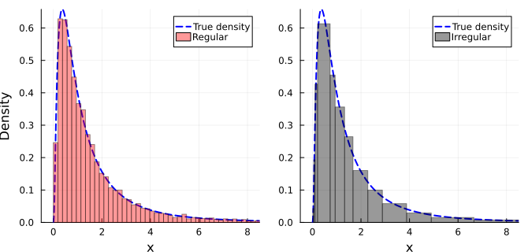
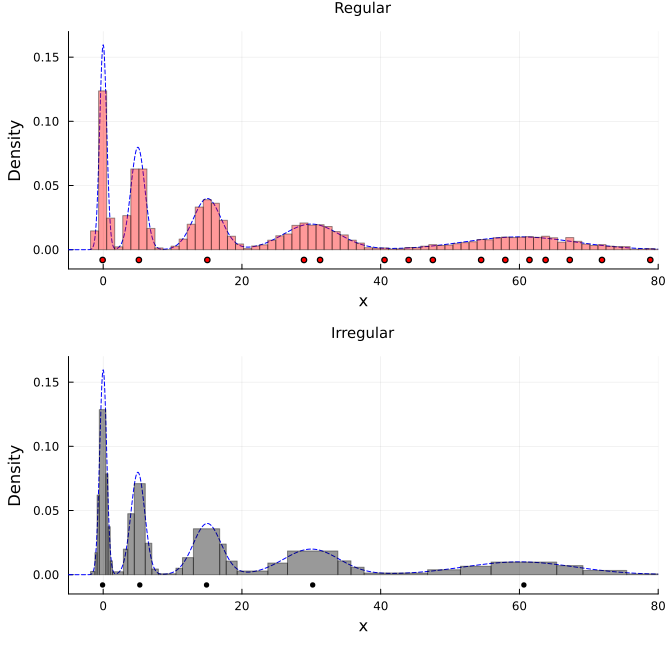

Density estimation
The following document illustrates the use of AutoHist.jl through examples from the world of density estimation. In particular, we showcase some of the relative advantages and disadvantages of regular and irregular histogram procedures.
Estimating the LogNormal probability density
We start by considering an example with some simulated data from the LogNormal-distribution. To start, we fit a regular histogram to the data, using the approach of Birgé and Rozenholc (2006), which corresponds to rule=BR().
using AutoHist, Random, Distributions
x = rand(Xoshiro(1812), LogNormal(), 10^4)
h1 = fit(AutomaticHistogram, x, BR())Alternatively, since the standard LogNormal pdf has known support $[0,\infty)$, we can incorporate this knowledge in our histogram estimate through the support keyword.
h2 = fit(AutomaticHistogram, x, BR(); support=(0.0, Inf))To quantify the difference of using the correct, known support in this case, we compute the integrated absolute error between the two densities in the following code snippet, which is given by $\int |f(x) - g(x)|\text{d}x$.
distance(h1, h2, :iae)0.04206469472280519The resulting $L_1$ distance of $0.042$ indicates that the new bin origin at $0$ has a moderate effect on the resulting density estimate.
The standard LogNormal is quite challenging to estimate well using a regular histogram procedure due to its heavy tails. These two factors make irregular methods an appealing alternative in this case. Here, we use the penalized log-likelihood approach from Rozenholc et al. (2010) with penalty R and a data-based grid to construct the histogram, (implemented in AutoHist.jl via rule = RMG_penR()).
h3 = fit(AutomaticHistogram, x, RMG_penR(grid=:data))To compare the two approaches, we can plot the resulting histograms along with the true density:
The irregular procedure selects smaller bin widths near the origin, reflecting the fact that the LogNormal density is rapidly changing in this area. On the other hand, the bin widths are larger in the flatter region in the right tail of the density. Both histogram procedures provide quite reasonable estimates of the density, owing to the fairly large sample size.
Mode hunting
In an exploratory data analysis setting, identifying key features in a dataset such as modes is frequently of great interest to statisticians and practicioners alike. Unfortunately, most popular regular histogram have been designed with good performance in terms of statistical risk with respect to classical, integral-based loss functions, which typically results in a large amount of spurious histogram modes in regions where the true density is flat and in the tails of the density (Scott, 1992). In practice, this means that a data-analyst must use subjective judgement to infer whether a regular histogram estimate is indicative of a mode being present or not. If the presence of a mode is deemed likely, subjective visual smoothing is typically required to get a rough idea of its location. In constrast, some irregular histogram procedures have been shown empirically to perform quite well with regard to automatic mode detection in cases where the true density has a smallish amount of well-separated modes, see e.g. Davies et al. (2009); Li et al. (2020); Simensen et al. (2025).
To illustrate the advantage of irregular histograms when it comes to mode identification, we will consider an example where we attempt to locate the modes of the Harp density of Li et al. (2020), plotted below.

The Harp density has 5 peaks with varying degrees of sharpness, with the location of each mode becoming gradually more difficult to locate in absolute terms as we move rightward on the $x$-axis. In the numerical experiment to follow, we generate a random sample of size $n = 5000$ from the Harp density, and fit both an irregular and a regular histogram to the data. Motivated by the results of the simulation studies in Davies et al. (2009) and Simensen et al. (2025), we have used the BIC criterion to draw the regular histogram, and the random irregular histogram method (rule=RIH()), as both of these have been shown to perform relatively well compared to their respective regular/irregular counterparts in automatic mode identification. To access the Harp distribution, we use the TestDistributions package, which can be found in the following github repository.
import .TestDistributions as TD
using AutoHist, Distributions, Random
x = rand(Xoshiro(1812), TD.Harp(), 5000)
h_reg = fit(AutomaticHistogram, x, BIC())
h_irr = fit(AutomaticHistogram, x, RIH())We can now add the two fitted histograms along with the location of their modes to the plot of the Harp density above:
The spatial inhomogeneity of the Harp density causes some trouble for the regular histogram, as the use of a global bin width leads to undersmoothing near the sharpest mode and oversmoothing near the flattest mode and in the tails. In particular, the regular estimate introduces many spurious modes near the rightmost mode of the true density, making it difficult to exactly infer the location and the number of modes in the region surrounding it. In contrast, the irregular histogram estimate is able to correctly infer the number of modes in the density automatically, with no subjective judgements required. The good mode-finding behavior is in this case enabled by the fact that the bin widths are able adapt to the local smoothness of the true density, resulting in more smoothing near modes. To inspect the accuracy of the inferred modes, we print the locations of the true modes and the peaks of the irregular histogram.
println("True modes: ", TD.Harp() |> TD.peaks |> x -> round.(x; digits=2))
println("AutoHist modes: ", h_irr |> peaks |> x -> round.(x; digits=2))True modes: [0.0, 5.0, 15.0, 30.0, 60.0]
AutoHist modes: [-0.09, 5.28, 14.9, 30.2, 60.64]We observe that all of the histogram peaks are quite close to a corresponding true mode, especially when taking the sharpness of each individual peak into account.